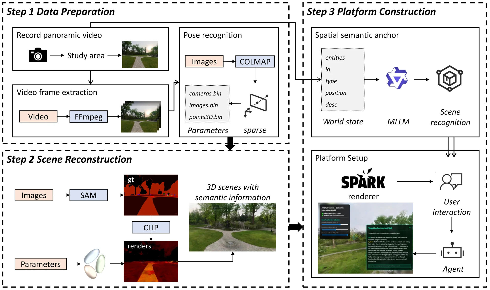
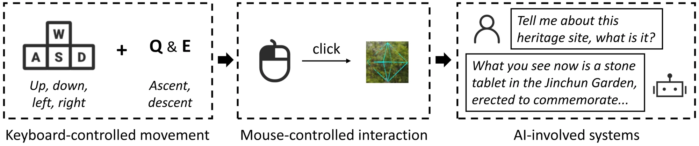
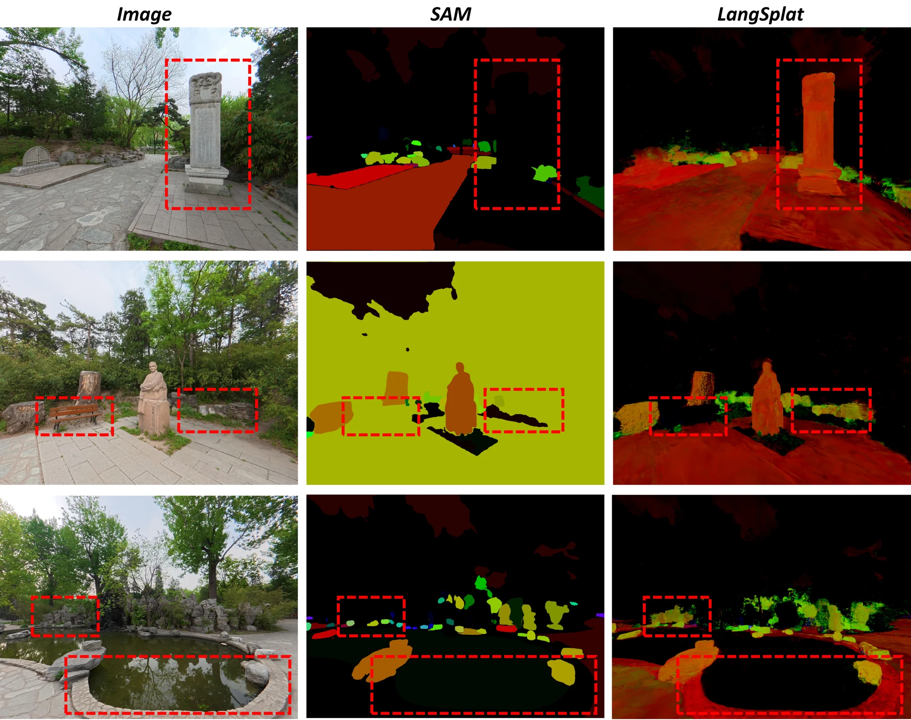
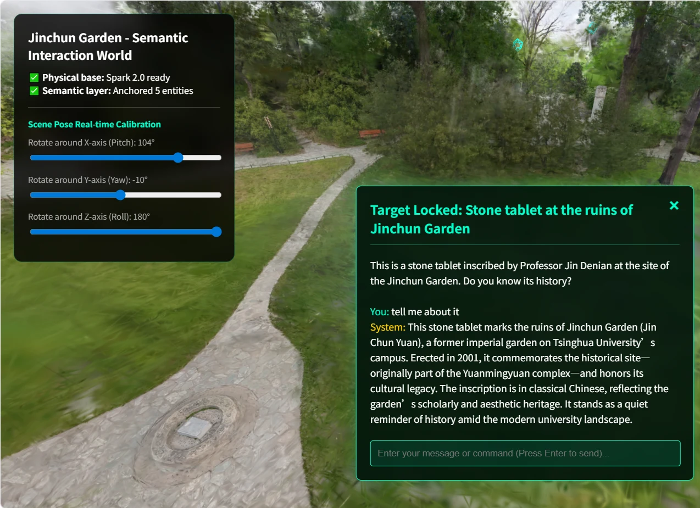
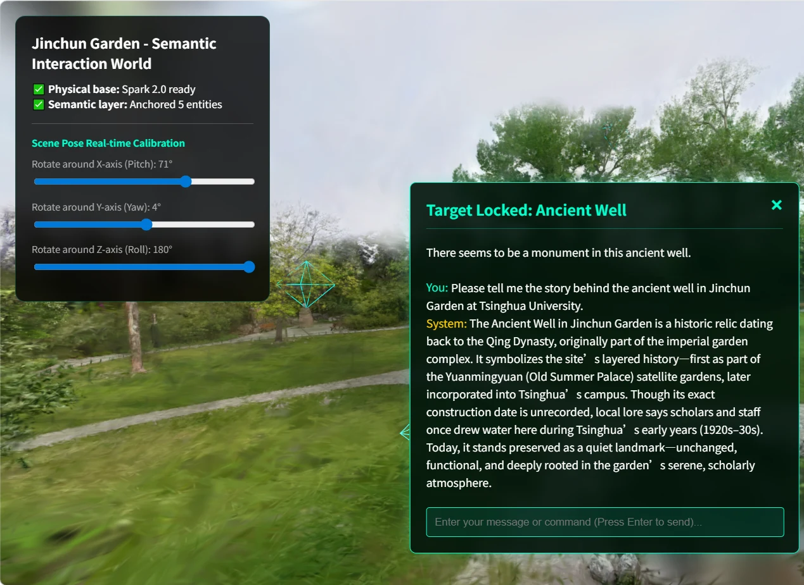

Spatial understanding · 2026
Semantic 3D Gaussian Splatting
From reconstructed geometry to objects we can query and interact with.

Research question
How can a visually reconstructed environment become a scene whose objects and spatial relationships can be queried and used in interaction?
Approach
The pipeline combines SAM, CLIP, LangSplat and ResGS for open-vocabulary 3D semantics. DBSCAN groups spatial features into object locations; an explicit world state connects these objects to a Three.js viewer and LLM interaction.
Current work
The prototype connects offline semantic feature processing with real-time browser rendering, semantic picking and language-based spatial interaction. It supports scenes containing millions of Gaussians.
System development integrating existing reconstruction and semantic representation methods.









